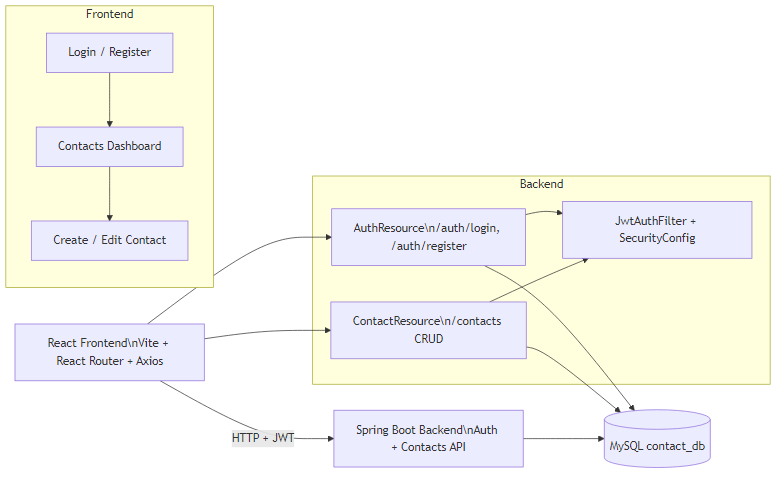
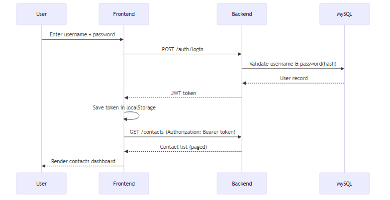
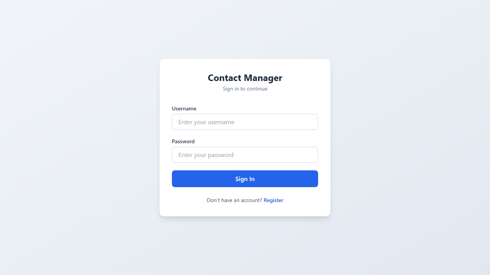
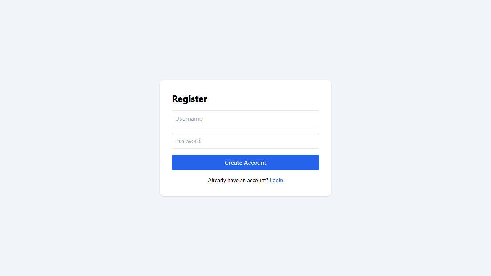
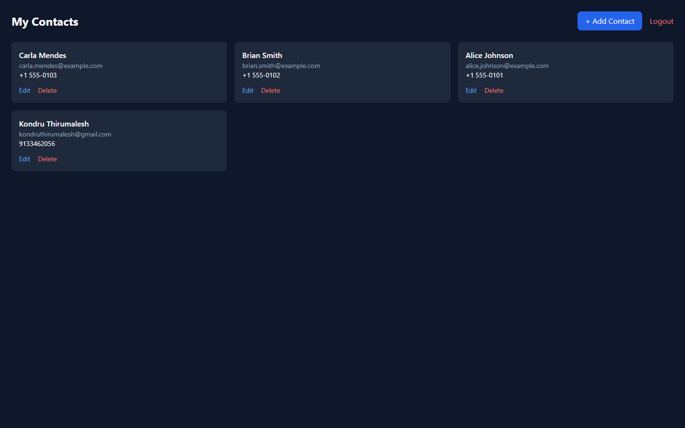

Comprehensive Project Documentation • Generated on February 20, 2026
Project Summary: A full-stack contact management application with JWT-based authentication. Users can register, log in, and manage contacts with user-level data isolation.
Frontend: React + Vite Backend: Spring Boot 3 Database: MySQL Security: JWT + Spring Security
The application provides secure CRUD operations for contacts. Authentication is handled through JWT tokens. Every contact is linked to a specific user, ensuring users only access their own data.

Shows interaction among React frontend, Spring Boot backend, and MySQL database.

Sequence of login, JWT creation, token storage, and authenticated API access.



| Package | Purpose |
|---|---|
resource |
REST endpoints (AuthResource,
ContactResource)
|
security |
JWT generation/validation and security filter chain |
service |
Business logic for contacts |
repo |
JPA repositories for User and Contact
|
domain |
Entity classes mapped to database tables |
config |
CORS, password encoder, data initializer |
/auth/** endpoints are public.Authorization: Bearer <token>.
/login./contacts?page=0&size=10.
| Column | Type | Description |
|---|---|---|
| id | BIGINT | Primary key |
| username | VARCHAR (unique) | Login identifier |
| password | VARCHAR | BCrypt hash (not plaintext) |
| role | VARCHAR | Usually USER |
| Column | Type | Description |
|---|---|---|
| id | UUID | Primary key |
| name | VARCHAR | Contact name |
| VARCHAR | Email address | |
| phone | VARCHAR | Phone number |
| title | VARCHAR | Professional title |
| address | VARCHAR | Address |
| status | VARCHAR | ACTIVE / INACTIVE |
| photo_url | VARCHAR | Optional avatar URL |
| user_id | BIGINT (FK) | Owner user id |
| Method | Endpoint | Auth | Description |
|---|---|---|---|
| POST | /auth/register |
No | Create account |
| POST | /auth/login |
No | Get JWT token |
| GET | /contacts |
Yes | Get paged contacts |
| POST | /contacts |
Yes | Create contact |
| GET | /contacts/{id} |
Yes | Get one contact |
| PUT | /contacts/{id} |
Yes | Update contact |
| DELETE | /contacts/{id} |
Yes | Delete contact |
On backend startup, the data initializer ensures a demo account exists and seeds sample contacts if missing.
testtest123Open terminal in contact-backend and run:
mvn spring-boot:run
Backend URL: http://localhost:8080
Open terminal in contact-frontend and run:
npm installnpm run dev
Frontend URL: http://localhost:5173
Edit backend config file:
contact-backend/src/main/resources/application.yml
Set your own MySQL username/password under
spring.datasource.
8080 and
5173.